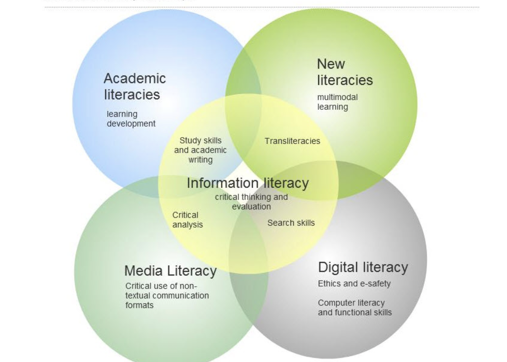
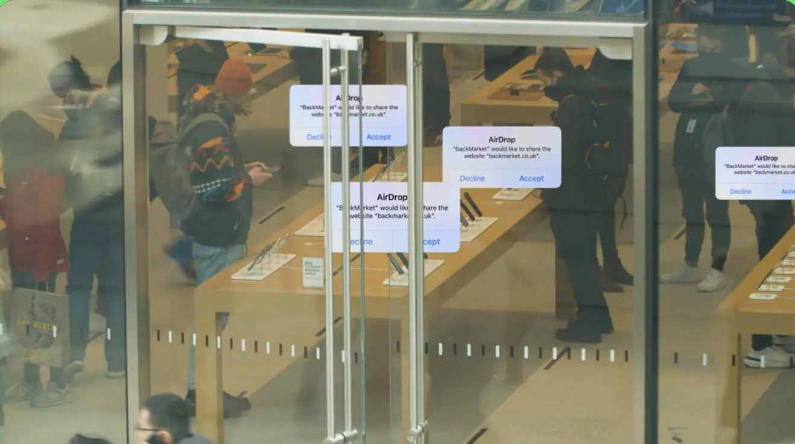

...and the fight against it.
Do you struggle to cope with the overwhelming amount of news sources thrown at you everyday?
Do you struggle to decipher what is integral and what is not
Our aim is to breakdown each common source of misinformation and provide you with the necessary skills to combat this.
In a recent study carried out by media researcher, Amy Watson, in 2023, it was found that:
18% of 12-15 year olds read/watch the news everyday in the UK.
COMPARED TO...
60% of 12-15 year olds in the UK use social media as a source of news, of which 46% struggle to recognise if what they are reading on social media is true.
In similar research carried out by Ofcom in 2022, 74% of children said they were confident they could identify sources of fake news but only 11% were able.
Based on these facts, it is clear that information literacy skills is an area that is lacking in the next generation of young people. Through use of this website, young people will have access to the tools that they need to tackle fake news and feel confident in their judgement when consuming information.
(links below to each case study)
"Amy Watson. 2023. 'False News in the UK- statistics and facts'"
"Ofcom. 2022. 'The genuine article? One in three internet users fail to question misinformation.'"